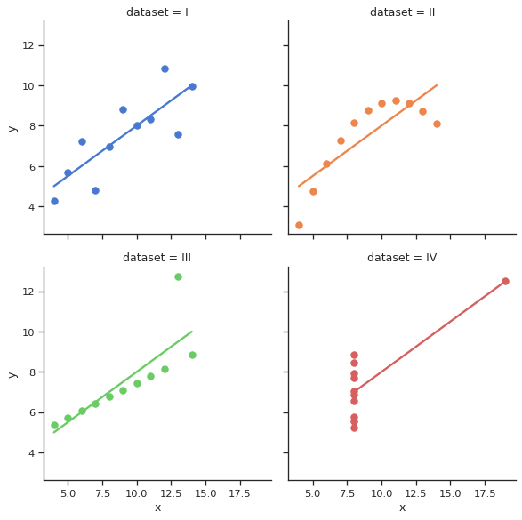

Anscombe’s quartet#
atmospy components used:
import seaborn as sns
sns.set_theme(style="ticks")
# Load the example dataset for Anscombe's quartet
df = sns.load_dataset("anscombe")
# Show the results of a linear regression within each dataset
sns.lmplot(
data=df, x="x", y="y", col="dataset", hue="dataset",
col_wrap=2, palette="muted", ci=None,
height=4, scatter_kws={"s": 50, "alpha": 1}
)